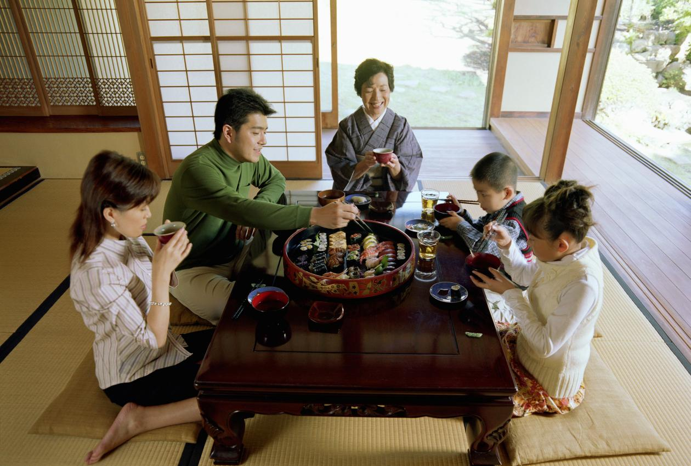

Tradiciones de Japón

Japón es un nacion que mantiene numerosas constumbres ancestrales que son parte de su cultura. estas tradiciones muestran admiracion, orden y equlibrio con el medio ambiente.

Japón es un nacion que mantiene numerosas constumbres ancestrales que son parte de su cultura. estas tradiciones muestran admiracion, orden y equlibrio con el medio ambiente.